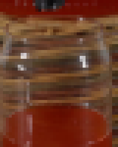
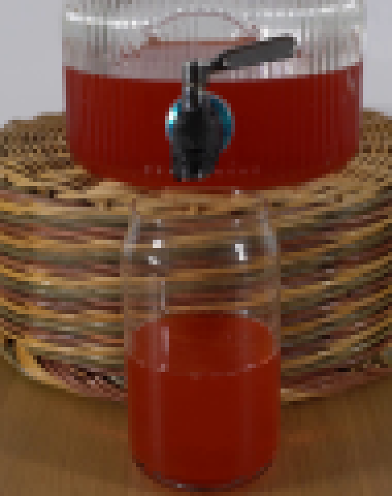
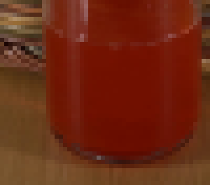
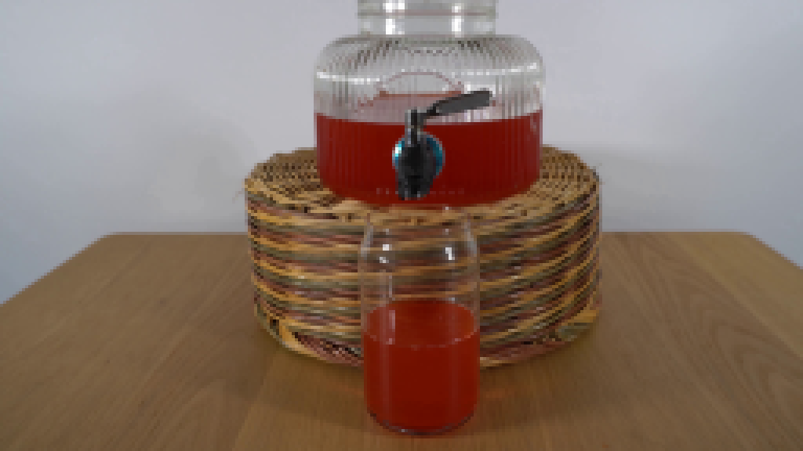
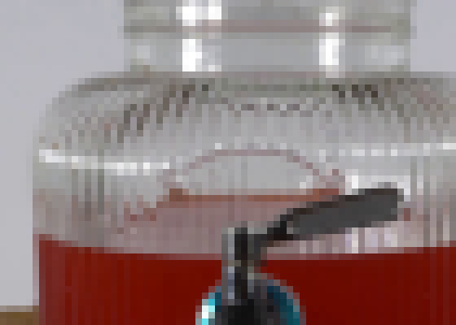
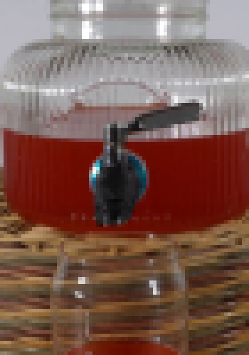
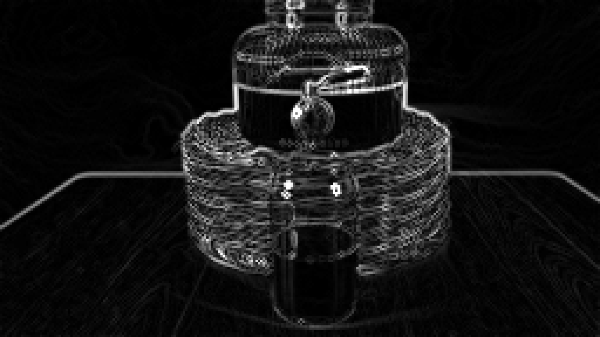

CODING AGENTS AS PIXEL WORLD MODELS
traex/DeepSeek-V4.1-Flash · 0068
尚未保存可播放视频
Static locked-off single-shot with fixed frame throughout filmed with constant framerate in real-time. The scene shows a realistic scientific demonstration. The scene only contains the described setup and actions. The glass beverage dispenser sits on a woven basket and the glass is half-filled with red liquid. The glass beverage dispenser, filled with a bright red liquid, is stationary over the glass.
failed逐轮保存的候选
回放视频、检查图与代码变化。
每份候选均可单独播放。实际图片检查记录在下方工具轨迹中。
可观测工具轨迹
实际执行的命令与返回图片。
命令 1exit 0
/bin/bash -c "pwd && rg --files -g '"'!*.mp4'"' -g '"'!*.mov'"' -g '"'!*.webm'"' | sort | sed -n '1,200p'"
命令 2exit 0
/bin/bash -c "sed -n '1,240p' prompt.txt"
命令 3exit 0
/bin/bash -c "sed -n '1,280p' GENERATION_RULES.md"
命令 4exit 0
/bin/bash -c "find . -maxdepth 2 -type f -printf '%P %s bytes\\n' | sort | sed -n '1,240p'"
命令 5exit 0
/bin/bash -c "sed -n '1,260p' artifact_io.py"
命令 6exit 0
/bin/bash -c "sed -n '1,260p' player_template.html"
命令 7exit 0
/bin/bash -c "python - <<'PY'
from PIL import Image
im=Image.open('first_frame.png')
print(im.mode, im.size)
print(im.getpixel((0,0)), im.getpixel((128,72)))
PY"命令 8exit 0
/bin/bash -c "python - <<'PY'
from PIL import Image
im=Image.open('first_frame.png')
# crop central rig with 4x nearest and save temp
for name,box in {'center':(85,20,180,140),'spout':(115,60,155,110),'glass':(105,100,155,144),'dispenser':(100,0,170,100)}.items():
im.crop(box).resize(((box[2]-box[0])*6,(box[3]-box[1])*6),Image.Resampling.NEAREST).save(f'.tmp/{name}.png')
PY"命令 9exit 0
/bin/bash -c "python - <<'PY'
from PIL import Image
import numpy as np
im=np.array(Image.open('first_frame.png'))
# print RGB summary for columns x=130..140 by row
for y in range(65,110):
arr=im[y,125:146]
# reddish pixels
red=(arr[:,0]>90)&(arr[:,0]>arr[:,1]*1.25)&(arr[:,0]>arr[:,2]*1.15)
print(y, ''.join('R' if r else '.' for r in red), tuple(arr[8]))
PY"命令 10exit 0
/bin/bash -c "python - <<'PY'
from PIL import Image
im=Image.open('first_frame.png')
# save enlarged whole
im.resize((1024,576),Image.Resampling.NEAREST).save('.tmp/full4x.png')
PY"命令 11exit 127
/bin/bash -c "file first_frame.png && identify -verbose first_frame.png | sed -n '1,80p'"
命令 12exit 0
/bin/bash -c "python - <<'PY'
from PIL import Image
import numpy as np
im=np.array(Image.open('first_frame.png')).astype(float)
# median background per region to understand palette
for name,(x0,y0,x1,y1) in {'bg':(0,0,100,60),'table':(0,90,256,144),'basket':(75,55,180,125),'jar':(98,18,166,93),'glass':(112,100,150,144)}.items():
a=im[y0:y1,x0:x1].reshape(-1,3)
print(name,'mean',a.mean(0).round(1),'q10',np.quantile(a,.1,axis=0).round(1),'q50',np.quantile(a,.5,axis=0).round(1),'q90',np.quantile(a,.9,axis=0).round(1))
PY"命令 13exit 0
/bin/bash -c "command -v ffmpeg || true; command -v python; python - <<'PY'
import numpy, scipy, PIL
print('numpy',numpy.__version__,'scipy',scipy.__version__,'pillow',PIL.__version__)
PY"命令 14exit 0
/bin/bash -c "python - <<'PY'
from PIL import Image
import numpy as np
im=np.array(Image.open('first_frame.png')).astype(int)
# 3x3 pixel neighborhoods around spigot and glass, print as colors in representative rows
for y in [74,76,78,80,82,84,86,88,90,92,94,96,98,100,102,104,106,108,110,112,114,116,118,120,122,124,126,128,130,132,134,136,138,140,142]:
vals=[]
for x in [118,120,122,124,126,128,130,132,134,136,138,140,142]:
r,g,b=im[y,x]
vals.append(f'{r:3},{g:3},{b:3}')
print(f'y={y:3}: '+' | '.join(vals))
PY"命令 15exit 0
/bin/bash -c "python - <<'PY'
try:
import cv2; print('cv2',cv2.__version__)
except Exception as e: print('no cv2',e)
PY"命令 16exit 0
/bin/bash -c "python - <<'PY'
from PIL import Image
import numpy as np
im=np.array(Image.open('first_frame.png'))
# detect jar outline using grayness and row/col edges; print selected colors and edge coords
for y in [18,20,22,25,30,35,40,45,50,55,60,65,70,75,80,85,90,95]:
row=im[y]
# x range where brightness > 135 and low saturation-ish, around center
cand=[]
for x in range(80,180):
r,g,b=row[x]
if max(r,g,b)-min(r,g,b)<25 and (r+g+b)>330:
cand.append(x)
if cand: print(y,min(cand),max(cand),len(cand))
PY"命令 17exit 0
/bin/bash -c "python - <<'PY'
from PIL import Image
import numpy as np
im=np.array(Image.open('first_frame.png')).astype(int)
for y in [18,20,22,25,30,35,40,45,50,55,60,65,70,75,80,85,90,95]:
row=im[y]
cand=[]
for x in range(80,180):
r,g,b=row[x]
if max(r,g,b)-min(r,g,b)<25 and (r+g+b)>330:
cand.append(x)
if cand: print(y,min(cand),max(cand),len(cand))
PY"命令 18exit 0
/bin/bash -c "python - <<'PY'
from PIL import Image
import numpy as np
im=np.array(Image.open('first_frame.png')).astype(int)
# list bright-neutral runs per row, using pixel-level largest segments and grayness threshold
for y in range(10,100,4):
arr=im[y]
mask=np.max(arr,1)-np.min(arr,1)<20
mask &= arr.mean(1)>130
# restrict central x 90:170
seg=[]; on=False
for x in range(90,171):
if mask[x] and not on: start=x;on=True
if on and (not mask[x] or x==170):
end=x-1 if not mask[x] else x
if end-start>=1: seg.append((start,end))
on=False
if seg: print(y,seg)
PY"命令 19exit 0
/bin/bash -c "python - <<'PY'
from PIL import Image
im=Image.open('first_frame.png')
for name,box in {'jar_top':(95,0,165,50),'basket':(60,50,195,125)}.items():
im.crop(box).resize(((box[2]-box[0])*8,(box[3]-box[1])*8),Image.Resampling.NEAREST).save(f'.tmp/{name}.png')
PY"命令 20exit 0
/bin/bash -c "python - <<'PY'
from PIL import Image
import numpy as np
im=np.array(Image.open('first_frame.png')).astype(int)
# rough differences from frame-level horizontal variation: examine candidate glass boundary by row in x 105..155
for y in [98,100,102,104,106,108,110,112,114,116,118,120,122,124,126,128,130,132,134,136,138,140,142]:
row=im[y]
# print x where red intensity transitions, threshold r>70 and r>1.5g
on=[]
for x in range(105,155):
r,g,b=row[x]
if r>70 and r>1.5*g and r>1.8*b: on.append(x)
print(y, (min(on),max(on)) if on else None)
PY"命令 21exit 0
/bin/bash -c "python - <<'PY'
from PIL import Image
import numpy as np
im=np.array(Image.open('first_frame.png')).astype(int)
# report mask of visually dark handle/spout vs basket for rows 72-96
for y in range(72,97):
s=''
for x in range(110,160):
r,g,b=im[y,x]
# black-ish / gray handle
if (r+g+b<210 and max(r,g,b)-min(r,g,b)<45): c='K'
elif r>75 and r>1.7*g and r>1.6*b: c='R'
elif r+g+b>390: c='W'
else: c='.'
s+=c
print(f'{y:3} {s}')
PY"命令 22exit 0
/bin/bash -c "python - <<'PY'
from PIL import Image
import numpy as np
im=np.array(Image.open('first_frame.png')).astype(float)
# gradient magnitude to inspect foreground edges
g=im.mean(2)
gy,gx=np.gradient(g)
mag=np.hypot(gx,gy)
Image.fromarray(np.clip(mag*4,0,255).astype('uint8')).resize((1024,576),Image.Resampling.NEAREST).save('.tmp/edges.png')
PY"命令 23exit 0
/bin/bash -c "python - <<'PY'
import cv2, numpy as np
from PIL import Image
im=np.array(Image.open('first_frame.png'))
h,w=im.shape[:2]
yy,xx=np.mgrid[:h,:w]
# glass interior polygon, main chamber plus rim
glass_poly=np.array([[114,94],[146,94],[146,106],[144,124],[142,136],[136,140],[123,140],[117,136],[115,124],[114,106]],np.int32)
glass=np.zeros((h,w),np.float32); cv2.fillPoly(glass,[glass_poly],1.0)
glass *= ((xx>=114)&(xx<=146)&(yy>=94)&(yy<=140)).astype(np.float32)
# red-ish only for tint
r,g,b=im[...,0].astype(float),im[...,1].astype(float),im[...,2].astype(float)
red=((r>65)&(r>1.45*g)&(r>1.55*b)).astype(np.float32)
glass_liq=glass*red
jar=np.zeros((h,w),np.float32); cv2.fillPoly(jar,[np.array([[101,61],[160,61],[160,92],[151,95],[111,95],[101,92]],np.int32)],1.0)
jar_liq=jar*red
out=im.copy().astype(np.float32)
out[glass_liq>0]=out[glass_liq>0]*0.55+np.array([0,180,255])*0.45
out[jar_liq>0]=out[jar_liq>0]*0.55+np.array([255,120,0])*0.45
Image.fromarray(np.clip(out,0,255).astype('uint8')).resize((1024,576),Image.Resampling.NEAREST).save('.tmp/masks.png')
PY"视觉工具实际返回图片 1
视觉工具实际返回图片 2

视觉工具实际返回图片 3

视觉工具实际返回图片 4

视觉工具实际返回图片 5

视觉工具实际返回图片 6

视觉工具实际返回图片 7

视觉工具实际返回图片 8

保存候选 0 份；完成命令 23 次；可验证图片返回 8 张。原始 API 响应与完整日志保留在本地。